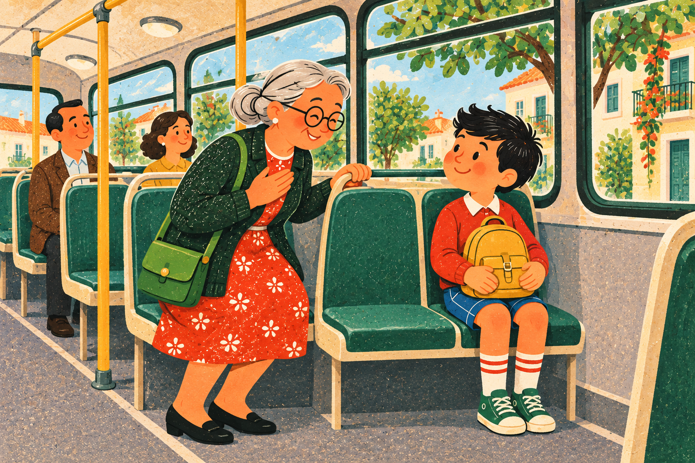

Espaços Partilhados
O autocarro está cheio.
Vais sentado no autocarro e uma senhora mais velha entra. Não há mais lugares livres.
O que fazes?
Resultado
Errado neste caso.
Ignorar quem precisa de ajuda num espaço partilhado não é um gesto cívico.
Certo.
Ceder o lugar é um pequeno gesto que faz uma grande diferença para quem está de pé.
Errado neste caso.
Evitar a situação não resolve a necessidade da outra pessoa.
A solução comum às três escolhas
Num espaço partilhado, reparar nos outros e ceder o lugar quando necessário é uma forma simples de cuidar da vida em comum.

Um pequeno gesto para experimentar
Antes de te sentares, olha à tua volta para ver se alguém precisa mais do lugar.